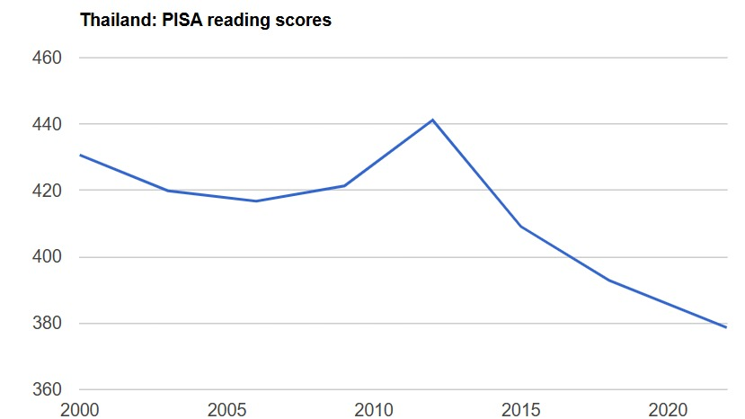

Thailand Reading Scores, PISA, 2000-2022

Why is this lesson important?
- Reading well at 15 predicts your future success.
- Thailand's scores keep falling, every year.
- Reading is a skill you can learn — not a gift.
A quick question
How many of you have read a book in Thai or English in the past 12 months?
Hand up. Look around.
Opinion — Reason — Evidence
Watch the news report
Why is the Professor worried?
Why does he think reading ability is declining?
Time to read together
Task 1: How One Round Works
Each person in your group has one job.
You will change jobs for every reading chunk. There are four chunks.
The jobs are: Predictor, Clarifier, Questioner and Summariser.
The teacher will not talk or give you answers. Your job is to teach each other.
Task 2 · Before reading
PREDICTOR
Look at the heading. Guess what the section will say.
| • | The heading says… so I think this section will… |
| • | I predict… because… |
Task 2 · After reading
| CLARIFIER Say what was confusing. Fix it with your group. |
| QUESTIONER Ask a genuine I wonder question, not a quick check. |
| SUMMARISER Say the main idea of the chunk in one sentence. |
Task 3 · Read and Learn
Read the chunk on your worksheet. Watch for:
systematic review · cognitive pull
Task 4 · Model discussion
Listen to four students read one round.
Emma predicts · Jack clarifies · Sophie questions · Liam summarises
Task 5 · Discuss with your group
| 1 | Reading at 15 predicts your future. |
| 2 | Reading pays at school and at work. |
| 3 | Reading can be learned, not born. |
| 4 | Thailand's fall is the sharpest. |
Give your opinion
| Opinion | In my opinion… / I think… |
| Reason | because… / I think this because… |
| Evidence | The text says… / In the article, it says… |
| Disagree | I'm not sure I agree… / I see it differently… |
| Agree | I agree, and also… / That's a good point, because… |
| Conclusion | So we agree that… / To sum up, we think… |
Opinion — Reason — Evidence
Now you do it
Work in your group of four
One role each.
For every chunk, rotate to a new role.
Everyone gets a turn at each role.
The reading pack has four chunks
| 1 | Reading at 15 predicts your future |
| 2 | Reading pays at school and at work |
| 3 | Reading can be learned, not born |
| 4 | Thailand's fall is the sharpest |
Your job, not the teacher's
Take notes as you read.
I will not speak or give answers.
You and your group manage it.
Silent reading
Read the chunk silently.
Take notes in your role.
Then start the discussion.
Discuss the chunk
Clarify. Question. Summarise.
Then rotate roles.
Next chunk.
Open-class feedback
What surprised you in the readings?
What did your group learn?
The big discussion
Final discussion
Say your opinion.
Give a reason.
Use an example from the text.
Opinion — Reason — Evidence